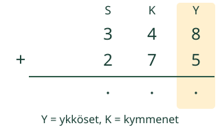
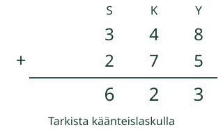
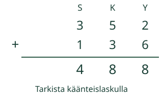

Aava yhdistää kahden laatikon 348 ja 275 merkkiä. Miten kymmenen pientä vaihtuu yhdeksi isommaksi?
Laske allekkain ja ymmärrä muistiluku.

Kohdista samanarvoiset numerot: ykköset ykkösten alle. Aloita oikealta.
Mallit ja toisto
Omat luvut: kokonaisluvut 0–9999. Myös tuloksen on oltava 0–9999. Vähennyksessä ylempi vähintään alempi.
Yksi askel näyttää yhden päätelmän tai yksiköiden vaihdon. Toisto etenee vain käynnistettäessä; voit pysäyttää tai askeltaa itse.
Esimerkit ja perustelut
Sarakkeen numero kertoo yksiköiden määrän
Kohdista ykköset ykkösten, kymmenet kymmenten ja sadat satojen alle. Näin lasket samanarvoisia yksiköitä yhteen. Aloita oikealta, jotta vaihdosta tuleva yksikkö ehtii mukaan seuraavaan sarakkeeseen.
Esimerkki 1: 348 + 275
Ykköset: 8 + 5 = 13 ykköstä = 1 kymppi + 3 ykköstä. Kirjoita 3 ykkösiin. Kymmenten muistiluku 1 tarkoittaa yhtä kymppiä, ei yhtä ykköstä.
Kymmenet: 4 + 7 + 1 = 12 kymppiä = 1 sata + 2 kymppiä. Kirjoita 2 kymmeniin. Sadat: 3 + 2 + 1 = 6. Tulos on 623. Vaihdot muuttavat esitystapaa, eivät määrää.
Esimerkki 2: 352 + 136
2 + 6 = 8, 5 + 3 = 8 ja 3 + 1 = 4. Mikään sarake ei saavuta kymmentä yksikköä. Tulos on 488 ilman muistilukuja.
Uusi numeropaikka
685 + 347 = 1032. Viimeinen vaihto tuottaa yhden tuhannen. Myös 99 + 1 = 100 vaatii uuden paikan; sitä ei saa pudottaa pois.
Väärinkäsitys: luvut eivät kohdistu vasemmasta reunasta. Laskussa 348 + 25 luku 25 tarkoittaa 2 kymppiä ja 5 ykköstä, ei 2 sataa ja 5 kymppiä. Tulos on 373.


Kokeile ja tarkista
348 + 275: mikä määrä muistiluku 1 kymmenten yläpuolella tarkoittaa? Entä satojen yläpuolella?
Ensimmäinen tehtävä: Laske 348 + 275. Voit vastata suoraan tai käyttää allekkainlaskua.
JavaScript käynnistää tarkistuksen. Voit myös ratkaista tehtävän paperilla.
Vapaaehtoinen apu
Merkitse sarakkeet Y, K, S, T. Sido 10 pientä yhdeksi isommaksi nipuksi. Kirjoita muistiluku seuraavaan sarakkeeseen ja sano sen arvo.
Aloita ykkösistä. Muistiluku on seuraavan sarakkeen yksikkö.
Voit vastata suoraan millä tahansa oikealla menetelmällä. Lukukenttä hyväksyy samanarvoisen kokonaisluvun, desimaalin tai murtoluvun (esim. 8,0 tai 16/2). Enintään 128 merkkiä; ei laskulausekkeita tai eksponenttimuotoa.
Lisäkokeilu
Vertaa 999 + 1 ja 998 + 2. Molemmissa tulos on 1000. Voisitko laskea nämä helpommin päässä? Valitse tilanteeseen sopiva tapa.
Opettajalle, rajat ja paperitehtävä
Tavoite: Kirjallinen yhteenlaskualgoritmi. Vuosiluokat 3–6 kanonisen graafin mukaan. Esitiedot: paikkajärjestelmä ja vastaava yhteen- tai vähennyslasku sataan. Pidä sarakkeen lukuyksikkö näkyvänä.
Pyydä selitys määristä, älä vain numeroiden siirtämisestä. Älä pakota kirjallista algoritmia, jos päässälasku on tilanteessa selkeämpi. Malli ja esimerkit tukevat päättelyä; suora oikea tulos ei kerro käytettyä menetelmää.
Paikallinen palaute koskee tätä vastausta, ei itsenäisyyttä, pysyvyyttä tai formaalia hallintaa. Ei henkilökohtaista historiaa, tallennusta tai ulkoista laskentapalvelua. Ei väitettä oppimistuloksista. Julkisten oppilasreittien toimivuutta ei varmenneta tässä.
Malli ei mittaa fyysistä liikettä tai ajankäyttöä; toiston 0,9 sekuntia on esitystahti. Suuri teksti ja oma askellus ovat käytettävissä. Täyttä manuaalista saavutettavuutta tai oppilaskokeilua ei ole tehty.
Rakenna 48 ja 27 merkeistä ja kymmenen nipuista. Yhdistä, vaihda 10 irtomerkkiä yhdeksi nipuksi ja sano, mikä säilyi samana. Piirrä sama allekkain.
Poistumiskysymys: Laske 267 + 156. Selitä, mistä kymmenten sarakkeen ylimääräinen yksi tuli. Tarkista vähentämällä toinen yhteenlaskettava summasta.